Chapter 05 Catalog
NoteGroup: unclassified
File: Chap-05/ash-sit-pot.qmd
A bit is a unit of information. In computer hardware, one bit refers to a (tiny) device that can be in either an “on” or “off” state, that is, either of two different states.
With two bits, the computer can represent four different states, with three bits eight, with four bits sixteen. Notice that each additional bit doubles the number of possible states that can be represented.
One bit is a tiny amount of information. The word “byte” refers to a larger amount of information, the equivalent of eight bits.
- How many different states can be stored by one byte?
BF-byte
The words “megabyte” (MB) and “gigabyte” (GB) refer to the amount of storage space on computers and other devices. Naturally, “mega” means million and “giga” means billion. So is 1 megabyte exactly 1,000,000 bytes and 1 gigabyte exactly 1,000,000,000 bytes? Not quite. A megabyte is 1,048,576 bytes and a gigibyte 1,073,741,824 bytes. These funny-looking numbers reflect the nature of information storage: every time we add an additional byte we increase the number of possible states 256-fold. In computer hardware, however, it’s common not just to add an additional unit of storage, but to double the amount of storage. A megabyte corresponds to 20 doublings of memory from a starting point of one byte. A gigbyte brings in another 10 such doublings.
In this hardware sense, exactly one million bytes would be a strange construction. Similarly with exactly one billion bytes.
- How many doublings correspond to exactly one million? (Choose the closest answer.) You can use the interactive R chunk that follows to do the calculations.
BF-million
File: Chap-05/avoid-ride-radio.qmd
Exercise 1 In the algebraic theory of logarithms, there are infinitely many logarithm values for any given number. To specify one or another of the various logarithmic values, you need to state the base of the logarithm. Let’s illustrate by looking at the given number 100, that is, 1e2 in scientific notation. We’ll let the computer do the calculation.
We like base-10 since that logarithm has a simple relationship to scientific notation and is the one most commonly used in graphics.
our_number <- 1e2
log(our_number, base = 10)[1] 2You can use any positive number as a base, for instance:
log(our_number, base = 2)[1] 6.643856log(our_number, base = 2.01)[1] 6.596392log(our_number, base = 324.23)[1] 0.796542log(our_number, base = pi)[1] 4.022932log(our_number, base = 0.05)[1] -1.537244Fun as this is, it suffices for all purposes other than theory to use base-10. Sometimes base-2 is convenient, especially when working with computers or dynamical processes involving half-lives or doubling-times, as in radioactive decay or the unfettered growth of bacterial colonies.
Perhaps you remember enough about the algebra of logarithms to figure out why this is:
log(our_number, base = our_number)[1] 1Mathematicians and other mathematically-adjacent professionals like physicists have an affection for a particular base: 2.71828182845905…. This is called “Euler’s Number” after an important 18th-century mathematician. It is one of the handful of numbers that have been given a letter as a name, like \(\pi\). Euler’s number is written \(e\) in his honor.
Computer scientists like to let mathematicians have their way, so if you fail to specify a base for the log() function, it will use base-\(e\).
log(our_number)[1] 4.60517log(our_number, base = 2.71828182845905)[1] 4.60517As a concession to the large number of people who use logarithms for important purposes and aren’t interested in mathematical generalizations, computer languages usually provide a way to calculate logs without needing the word “base.” A typical name for such a computer function that produces logarithms (base-10) is log10().
log10(our_number)[1] 2log(our_number, base = 10)[1] 2File: Chap-05/avoid-send-mug.qmd
Exercise 2 Food and medicine are measured over a large range. For instance, in the metric system, measurements might be denominated in micrograms, milligrams, grams, kilograms. How many orders of magnitude (that is, factors of 10) are spanned from micrograms to kilograms.
asm-1-wels
File: Chap-05/bear-leave-tv.qmd Status: sketch
Exercise 3 Name five units for energy. Remember that “power” has a different dimension than energy.
File: Chap-05/beech-bid-plate.qmd Status: sketch
Exercise 4 The exponents on each element of a dimension, say L T-1, must always be integers, that is \(\ldots, -2, -1, 0, 1, 2, 3, \ldots\).
- Multiplying or dividing two quantities creates a quantity with a dimension that is the product or quotient of the two quantities, respectively. For instance, dividing L T-1 by T gives L T-2. Explain briefly why such multiplication or division of quantities must always produce a dimension expression where all the exponents are integers.
In contrast, taking a square root (or any non-integer power) does not necessarily produce integer exponents for the element of the dimension. For instance, \(\sqrt{L/T}\) produces L1/2 T-1/2. For each of the following, say whether the dimension is legitimate.
[square root of length] bbp-723-2
[square root of velocity] bbp-723-3
[square root of energy] bbp-723-4
[square root of (energy/mass)] bbp-723-5
File: Chap-05/bobcat-fight-room.qmd Status: sketch
Exercise 5 What is the non-mantissa part of a number in scientific notation. (If you earlier learned another name, give that. But also give the one used in the chapter.)
File: Chap-05/brother-lose-scarf.qmd Status: sketch
Exercise 6 The chapter discusses the distinction between understanding the steps of an algorithm in detail, and understanding enough about the algorithm to be able to operate it. What do you need to understand in order to operate an algorithm?
File: Chap-05/cheetah-feel-teacup.qmd Status: sketch
Exercise 7 Your prototype, autonomous, flying drone taxi has a maximum range of 100 miles. After two days of non-stop lab work in Bastrop, you direct your drone taxi to fly you to the roof of your Austin apartment building. You fall asleep. When you wake up, the taxi has landed in the middle of nowhere, batteries drained. Evidently, you are in the midst of a massive, AI-generated, apocalypse-movie-like cyber attack, which not only scrambles the navigation of your taxi, but has also silenced all forms of communication and caused everyone else to hunker down in whatever building they are closest to. You need to get back in touch in order to do something of movie importance: feed your puppy, forestall a global nuclear war, provide the antidote (which you just finished developing in Bastrop and are carrying to Austin) to a global bio-toxin outbreak, etc. All you have is a magnetic compass and the map below, which you printed out when your puppy asked you by text message where is Bastrop.
From your vast familiarity with the lost-in-the-desert genre of literary endeavor, you know that it is best to pick a direction, then walk steadily in that direction until you encounter a major road (such as the ones shown on the map). You walk east. After 20 miles, you still have not come to a major road. What are the locations on the map which are most consistent with the information given. (Mark the map with several possibilities.)
Frustrated, tired, hungry, thirsty, and in a semi-psychotic state, you decide to turn north. After another 20 miles, you find a major road. All the road signs have been obliterated by a movie-script writer, so they are no help. What are your best guesses about where you are? (Mark these on the map, too, but in a different color than the previous marks.)
Explain the reasoning behind your answer.
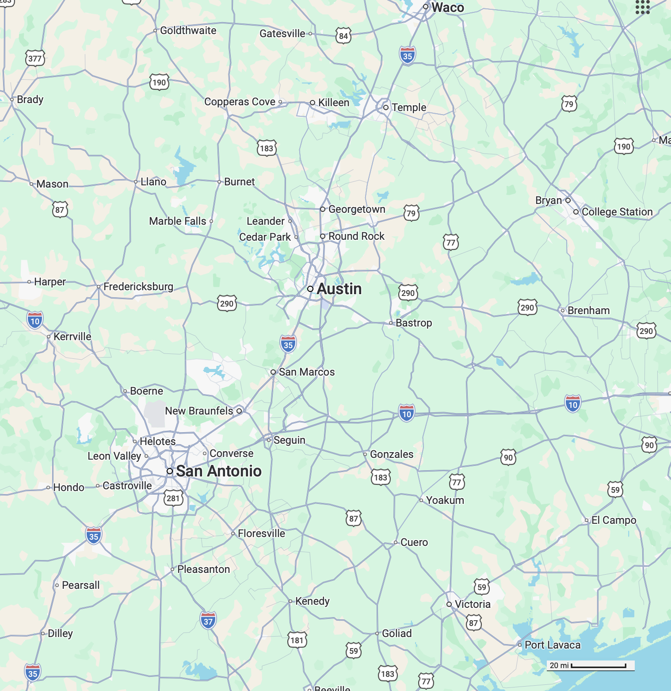
File: Chap-05/child-lick-canoe.qmd Status: sketch
Exercise 8 BUILD AN EXERCISE OUT OF THIS The use of factors of 10 in counting orders of magnitude is arbitrary. A person walking and a person jogging are on the edge of being qualitatively different, although their speeds differ by a factor of only 2. Aircraft that cruise at 600 mph and 1200 mph are qualitatively different in design, although the speeds are only a factor of 2 apart. A professional basketball player (height 2 meters or more) is qualitatively different from a third grader (height about 1 meter).
File: Chap-05/cow-walk-pantry.qmd Status: sketch
Exercise 9 Perhaps unsurprisingly, the power of an automobile engine has the dimension of power.
Imagine a car with a 100 horsepower engine. What is the equivalent value in units of watts.
light-bulb-e3
File: Chap-05/duck-lay-shelf.qmd Status: sketch
Exercise 10 Grab the P2 graphic from Chap-05-magnitudes.qmd. This is the one with black lines connecting a country in 1960 to the same country in 2020.
New names:
Rows: 22496 Columns: 10
── Column specification
──────────────────────────────────────────────────────── Delimiter: "," chr
(4): Entity, Code, 900793-annotations, World regions according to OWID dbl (6):
Year, Child mortality rate, GDP per capita, Population (historical)...
ℹ Use `spec()` to retrieve the full column specification for this data. ℹ
Specify the column types or set `show_col_types = FALSE` to quiet this message.
• `time` -> `time...9`
• `time` -> `time...10`P2 <- goo |>
mutate(logChild = log10(`Child mortality rate`),
logGDP = log10(`GDP per capita`)) |>
gf_point_interactive(logChild ~ logGDP,
color = ~ year, alpha = 0.6,
tooltip = ~ glue::glue("{Entity} {Year}<br>GDP {signif(`GDP per capita`, 3)}<br>Mortality {round(`Child mortality rate`,1)}")) |>
gf_labs(y = "Magnitude of child mortality rate (per 1000)", x = "Magnitude of GDP per capita (International Dollars)") |>
gf_line_interactive(log10(`Child mortality rate`) ~ log10(`GDP per capita`),
group = ~ Entity, color = "black", data = Cuba, inherit=FALSE)
P2 |> gf_refine(scale_x_log10(), scale_y_log10())Warning in transformation$transform(x): NaNs producedWarning in scale_y_log10(): log-10 transformation introduced infinite values.Warning in transformation$transform(x): NaNs producedWarning in scale_y_log10(): log-10 transformation introduced infinite values.Warning: Removed 49 rows containing missing values or values outside the scale range
(`geom_interactive_point()`).Warning: Removed 4 rows containing missing values or values outside the scale range
(`geom_interactive_line()`).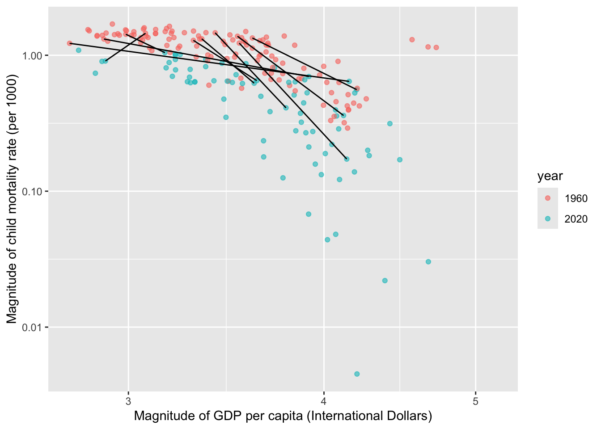
What does it mean when two country points from different years lie nearly directly above one another on a plot with GDP on the horizontal axis? Expected answer: GDP changed little while the vertical quantity changed substantially.
File: Chap-05/duck-see-magnet.qmd Status: sketch
Exercise 11 The rate of energy while running captured the “amount of running” in units of mile-pounds. But doesn’t speed enter into it? It’s common sense that running faster involves a larger “amount of running.” If this were the case, the units for the amount of running would be mile-pounds-mile/hour or miles2-pound/hour. That’s a strange-looking unit. It turns out, however, that running speed is not an important factor in determining the amount of energy used to run a mile-pound. Instead, the increased effort for running fast is due to higher power use, where power is energy per time.
File: Chap-05/duck-wish-blouse.qmd Status: sketch
Exercise 12 Explain what is meant by a mantissa and the rule for formating one.
File: Chap-05/finch-bite-closet.qmd Status: draft
NEED TO IMPORT THE mortality-v-GDP GRAPHICS
Exercise 13 Figure 2 shows an example based on the mortality versus GDP data. Note that the data points are spread out in the same way as when magnitude is used for the labels; only the labels and tick-mark positions differ.
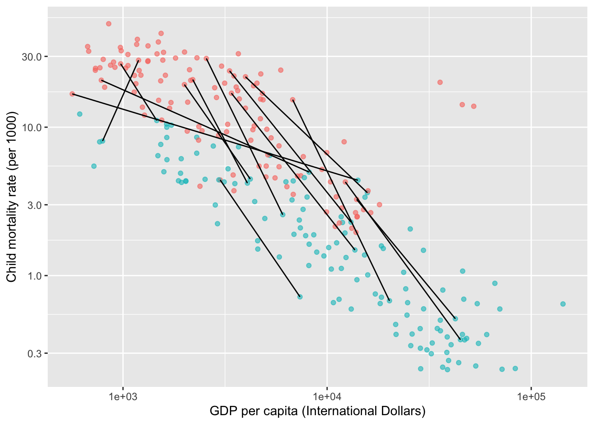
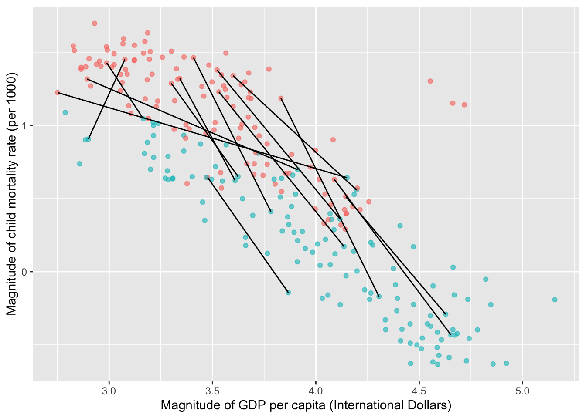
File: Chap-05/finger-make-scarf.qmd Status: sketch
Exercise 14 Something about economists using a rate of change of magnitudes for describing the relationship between two financial dimensions. When the underlying ratio reflects prices of a good, the magnitude rate of change is called an elasticity.
File: Chap-05/fly-spend-gloves.qmd
Exercise 15 Are these two quantities the same (e.g. the same dimension) or different.
- passenger miles
- passengers per mile
Briefly justify your answer including consideration of the quantities’ dimension.
File: Chap-05/giraffe-meet-cotton.qmd
Exercise 16 We have defined for your convenience several one-input functions named f1() through f5(). Graph each of them, one at a time, on the domain -5 to 5 and, from the graph, read off the requested information. (Hint: All you need is the name of the function, you don’t have to worry about how we constructed it.)
- For
f1(), for what input does the output reach its maximum value? (Select the closest value.)
gmc-1-lesle
- For
f2(), what is the input where the output crosses zero? [Pick the closest answer.]
gmc-2-loie
- For
f3(), what is the minimum value of the output? [Pick the closest answer.]
gmc-3-yee
- For
f4(), at what input does the output cross zero? [Pick the closest answer.]
gmc-4-rwsle
- For
f5(), at how many different inputs does the output cross zero?
gmc-5-qdr
File: Chap-05/goldfish-cost-bed.qmd
Exercise 17 Consider an everyday kind of question: Which is more to blame for discomfort in hot weather, the temperature or the humidity?
The blame question makes sense only if we think that humidity and temperature have something to do with comfort. Everyday experience strongly suggests that they do. For quantitative understanding, we can translate “something to do with …” into a mathematical framework: that comfort is a function of humidity and temperature. Functions are not the only way to represent the idea of “something to do with,” but experience has shown that they are powerful ways to do so. Knowing how functions are constructed and how to extract information from them is an essential component of quantitative analysis.
In Steadman’s model, sultriness is constructed as a function of temperature and relative humidity. That is, the inputs to the function are temperature and humidity. The output is sultriness. You can calculate the sultriness corresponding to the values of the inputs in Figure 3.
Inputs:
Figure 3 shows three values. When you change the inputs, the output changes accordingly. That is the characteristic of a function. The presentation in Figure 3 is adequate for someone who wants to compute the sultriness for given weather conditions. We gain more insight into sultriness if we present the output of the function for many different sets of inputs. Steadman’s paper displayed the function as a printed table, which was the only practical way of communicating such a complicated function in 1979 (that is, before the widespread availability of calculators or computers).
True or false: there are temperature/humidity combinations at which the output temperature (that is, the sultriness index) is lower than the input ambient temperature? gcb-1-kwe
At an input temperature of 37 C (that is, body temperature) what is the highest humidity level for which the inputs are in bounds?
gcb-2-e4kf
- Set the inputs to 37 degrees C and zero humidity. Note the function output.
3a. What’s the greatest amount you can change the humidity input without changing the function output?
gcb-3a-ekxe
3b. At 0% humidity, there is some input temperature where the output temperature is greater than the input. gcb-3b-2se
3c. At 50% humidity, there is some input temperature where the output temperature is greater than the input. gcb-3c-2se
- At 50% humidity, what’s the highest possible value for the output?
gcb-4-chsle
- At 100% humidity, set the input temperature to 20 deg C. The output will be 15 deg C. Now raise the input temperature slowly. Use the up-and-down triangles in the box showing the input temperature, so that you can change temperature by 0.1 deg C each click.
5a. How many clicks are required to raise the output temperature to 16 deg C?
gcb-5a-oeie
5b. What is the rate of change of output temperature with respect to the input temperature at with the inputs (20 C, 100%)?
gcb-5b-oeie
File: Chap-05/goldfish-jump-scarf.qmd Status: sketch
Exercise 18 With reference to the log graphics in the Magnitudes chapter.
The question is, how to do it? Understanding which dimensions of the situation contribute to low mortality, and which do not, can help us figure out what to do.
Undoubtedly, environmental and ecological conditions contribute to child mortality, such as the presence of malaria or parasitic worms or other sanitary conditions. Social conditions such as a lack of educated health-care providers likely also have an impact. And nutrition deficiencies, displacements from war, and many others. Operationalizing these dimensions into appropriate quantities presents a challenge, not least because many nations lack reliable data-gathering institutions.
A major motivation for developing data-collection institutions in a country is the collection of taxes and the regulation of trade. This means that economic data is more uniformly available. One operationalization of the economic dimensions of a country is called the Gross Domestic Product. This has a technical definition and isn’t necessarily an accurate indication of a country’s entire productive activity, especially in the important non-monetary sector, but it is readily available on a country-by-country basis. The causality of the relationship between GDP and health statistics is potentially complex. For instance, war and malaria lower a country’s GDP but also directly impact health.
File: Chap-05/jellyfish-open-socks.qmd
Exercise 19
graph LR X(X) Y(Y) Z(Z) U(U) V(V) W(W) X --> W Z --> W W --> U Y --> U U --> V Y --> V classDef exogenous fill:#fff,stroke-width:1px class X exogenous class Y exogenous class Z exogenous
- Which quantities are exogenous?
jos-1-ekf
For the endogenous quantities, each of the round-cornered, shaded boxes is a function. The output of the function is the quantity named in the box. The inputs to the function are the names of the quantities that are connected to the box by incoming arrows.
- What are the inputs to the function V()?
jos-2-hgw
- What are the inputs to the function W()?
jos-3-s4w
- jos-4-dw
Is this collection of functions consistent with the system diagram?
- U(W, Y)
- V(U, Y)
- W(X, Z)
- Consider a new system consisting of these functions and their inputs.
- B(A, E)
- D(B, F)
- F(B)
- C(F, A)
Which are the exogenous quantities?
jos-5-was
File: Chap-05/kitten-close-coat.qmd
Exercise 20 Home chefs are advised that there is a safe temperature for cooking poultry: a thermometer inserted into the deepest part of the flesh should reach 165 deg F. This often leads to dry meat. In contrast, “rotisserie chicken,” the sort of fresh, pre-cooked chicken sold by grocery stores, is almost always moist and tasty. How does the rotisserie method achieve this?
There is actually a wide range of temperatures at which chicken can be cooked safely. The key is to hold the meat at that temperature for long enough. At 165 deg F, safety is achieved instantly.
Figure 4 shows the required holding time at a range of temperatures:
Poultry |>
gf_line(c_time ~ temp) |>
gf_labs(x = "Safe temperature (deg F)", y = "Holding time") |>
gf_theme(theme_minimal())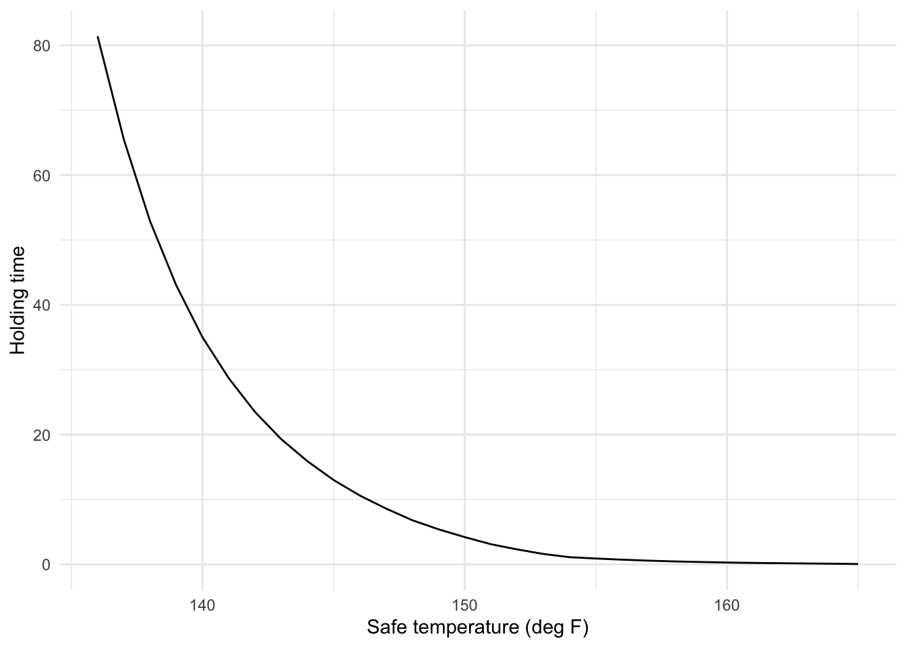
- Suppose you determine to cook your chicken at 140 deg F. Assuming it takes two hours of cooking to ensure that the entire chicken reaches that temperature, how much longer do you need to cook the chicken in order to make it safe?
kcc-1-kes
Naturally, you want to avoid any risk of food poisoning. This could happen, for instance, if your oven runs cool. For instance, an oven set to 140 deg F might actually have cold spots at, say, 135 deg F.
There are two ways to guard against this. One is simply to hold the chicken at the cooking temperature for longer than the answer in Question (1).
- If you want to guard against the possibility of an oven temperature of 135 deg F, how long do you need to hold the chicken at cooking temperature for safety? (Remember, this is the time beyond the original two hours needed to get the bird up to the cooking temperature.)
kcc-2-kes
Home chefs are used to a cooking method where the temperature is set very high (e.g. 350 deg F) and the time carefully regulated to avoid overcooking. Better results can be had at much lower temperatures so long as you take care to hold the bird at the temperature for long enough and check and calibrate your oven to ensure that it is at the right temperature. Commercial rotisseries have ovens set up for this purpose.
File: Chap-05/lamb-speak-radio.qmd
Exercise 21
- Which kind of scale is this? sca-1-iynwq
- Which kind of scale is this? sca-2-btuqn
- Which kind of scale is this? sca-3-ujkzw
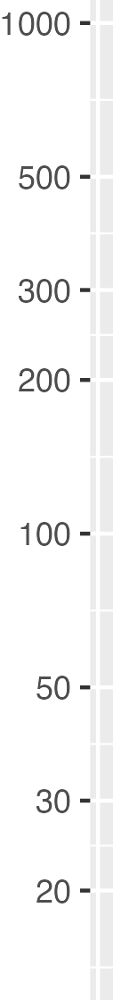
Which kind of scale is this? sca-4-xgjzi
- Which kind of scale is this? sca-5-jtbam
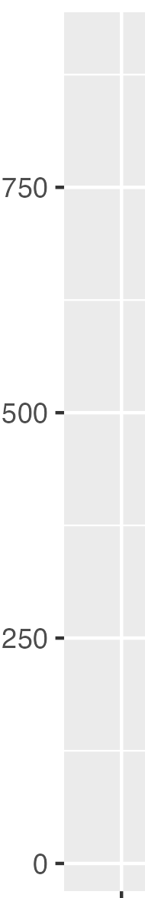
Which kind of scale is this? sca-6-rozql
- Which kind of scale is this? sca-7-byroe
File: Chap-05/maple-shut-pencil.qmd
Exercise 22 Write out an algorithm to compare any two numbers in scientific notation. Scientific notation numbers have the form \(m \times 10^{\ p}\) where \(m\) is called the mantissa and \(p\) the exponent. The format you will work with is the two mantissas and the two exponents. We’ll call them \(m_1\), \(m_2\), \(p_1\), and \(p_2\) respectively.
You have been given an algorithm compare(x, y) which given any two numbers x and y will return either “gt”, “eq”, or “lt” depending on whether x is greater than, equal to, or less than y. You also have a three-way if else, which you can use like this:
comp <- compare(x, y)
if (comp == "gt) {
# handle gt case
} else if (comp == "eq) {
# handle eq case
} else {
# handle lt case
}Hint: Start by comparing the exponents \(p_1\) and \(p_2\). This comparison will give you the overall answer except in one case, where you will have to look at the mantissas \(m_1\) and \(m_2\).
File: Chap-05/mouse-love-pen.qmd Status: sketch
Exercise 23 Phenomena where measurements are usually reported on a magnitude scale: sound, earthquakes, acidity (pH), information
File: Chap-05/owl-tug-room.qmd Status: sketch
Exercise 24 Show how the magnitude corresponds to the amount of data needed. Doubling the amount of data means, effectively, squaring the likelihood. If you start with “limited evidence”, you need to double the amount of data to get to Magnitude 2. Another doubling (that is, to four times the amount of data) brings you to Magnitude 4.
File: Chap-05/pig-think-bolt.qmd
Exercise 25 Usually you read the order of magnitude from the integer following the e. For instance, the order of magnitude of 1.56e13 is simply thirteen. But for the devious purposes of this drill problem, we’ve written some of the numbers in non-standard form.
The standard form for writing a number in scientific notation has, as you know, two components: a mantissa and an exponent. The mantissa is written to have one non-zero digit to the left of the decimal point. The exponent must always be an integer, that is \(\ldots, -2, -1, 0, 1, 2, 3, \ldots\).
- Which one of the following is not in standard form?
ptb-1-o3f
- Which one of the following is not in standard form?
ptb-2-fdw
Suppose you have a number written in non-standard form, e.g. 36.525e1. To change this to standard form, you need to divide the mantissa by 10, that is, move the decimal point one place to the left. To compensate for the division by 10, you need to raise the exponent by 1. This gives 3.6525e2
Similarly, when the leading digit of the mantissa is zero, for instance 0.0052e1 conversion to standard form requires moving the decimal point to the right until the leading digit is non-zero. To compensate for moving the decimal point, you need to subtract the number of places moved from the exponent. So to put 0.0052e1 in standard form we need to move the decimal point three places to the right and, in compensation, subtract 3 from the exponent. This gives 5.2e-2.
- For each of these mantissas, how do you have to move the decimal point to place the mantissa in a standard form for scientific notation? (3L means “three places to the left” while 2R means two places to the right.)
3a. 92425.01
ptb-3a-clse
3b. 0.00314e3
ptb-3b-s3d
3c. 1.00026e-3
ptb-3c-s3d
- Three of the following numbers have the same order of magnitude. Which one doesn’t?
ptb-4-dkwd
File: Chap-05/pine-fall-drawer.qmd Status: sketch
Exercise 26 Let’s see what we can do to include units compactly as part of a numeral.
\[\newcommand{\year}[2]{\stackrel{\text{#2}}{#1}}\] \(\year{y}{km.lb2/year}\)
File: Chap-05/pollen-stand-pen.qmd
Exercise 27 In everyday speech, a “decade” corresponds to 10 years, “two decades” to 20 years, and so on. In magnitude graphics, a decade refers to something different. On a magnitude scale, as on all numerical scales, there is a lowest marked value and a higher marked value. If the higher marked value is 10-times the size of the lowest, that scale covers one decade. If the higher marked value is 100-times the size of the lowest—that is, two orders of magnitude bigger—the scale is said to cover two decades. A span of three orders of magnitude corresponds to three decades, and so on.
- How many decades are spanned by this interval: [0.01 to 10]?
psp-1-3kdw
- How many decades are spanned by the interval [10 to 1000]?
psp-2-ired
- How many decades are spanned by the interval [0.3 to 30]?
psp-3-yseld
Sometimes an interval doesn’t cover a full order of magnitude. For instance, the in scale [10 to 30], the higher value is not even 10 times the lower. But, when the higher number is 3 times the lower, we way that the interval covers “half a decade.” Why “half?” Two half orders of magnitude places the higher value at \(3 \times 3 \approx 10\) times the lower value. Since since a factor of 10 is one decade, a factor of 3 is (roughly) half a decade.
- How many decades are spaned by the interval [10-300]?
psp-5-2ess
- How many decades are covered by this scale?

psp-5-nkvd
- How many decades are covered by this scale?

psp-6-gru
File: Chap-05/seahorse-pitch-teacup.qmd
Exercise 28 Official standards for bacterial cleanliness are set on a scale measuring what proportion of bacteria may survive a cleaning. For instance, the Mr. Clean bottle claims to eliminate 99.9% of bacteria, that is, that only one in a thousand bacteria will survive.

Experts often us a more “scientific”-sounding logarithmic scale. For instance, food safety might be set at a “7 log\(_{10}\) lethality.” This means that of 107 bacteria, only one might survive.
On the “log\(_10\) lethality” scale, how clean is Mr. Clean?
spt-1-wlww
File: Chap-05/seal-form-glasses.qmd
Exercise 29 Look at Figure 5.5 showing the relationship between a mortgage’s monthly payment and loan duration in years. What story does this figure tell? What do you think the author means when he says “the homeowner suffers from “diminishing marginal returns” as the loan duration increases?”
File: Chap-05/seal-ride-book.qmd
Exercise 30 In the text’s example about sun position, cloudiness, and production, select the correct description:
srb-1-njvc
File: Chap-05/seaweed-build-jacket.qmd
Exercise 31
- Recall the
monthly_payment()function. xf(“fig-payment-r-slice”)is a slice plot that holdsprincipal` constant. Which of the following correctly describes the plot?
sbj-1-keiw
- Figure 5.5 is a similar slice plot. that holds
principalconstant. Which of the following correctly describes that plot?
sbj-2-keiw
File: Chap-05/sheep-tear-bed.qmd
Exercise 32 What units do you habitually use to measure speed, either walking or biking or driving or flying? In those units, how many digits are needed across the spectrum encounted in everyday movement?
File: Chap-05/snail-say-clock.qmd
Exercise 33 There are many situations in which we adopt units so that commonly encountered measurements have just two or three digits. Both the Fahrenheit and Celsius temperature scales have the nice feature that commonly encountered outdoor temperatures have two digits. Those familiar with the Fahrenheit scale know that temperatures on weather maps tend to range from -30 to 120°F. For Celsius, the range -20°C to 40°C does the job. Students in the US learn that atmospheric pressure is about 14.7 pounds per square inch.
Tire pressures for cars and bicycles are frequently denominated in one of three units: pounds-per-square inch (psi), bar, and pascal (P). If you are unfamiliar with tire pressure, you might have to do a tiny bit of web research to answer these questions.
- Which of the three units gives pressures that can be expressed with two or three digits?
ssc-1-cksw
- Which of the three units uses 3 digits, and even then has to be modified by an order-of-magnitude prefix?
ssc-2-gdiw
- Which of the three units requires a decimal point to denominate car tire pressures to a suitable precision of \(\pm\) 10%?
ssc-3-edke
(The unit “pounds per square inch” is often abbreviated “psi,” but this obscures that we are dividing by square inches, not multiplying). Inflate a car tire to about 35 psi, a bicycle tire to about 60-100 psi. The metric unit of pressure is a pascal (P), but it is poorly suited to representing everyday pressures: bike tires are in the range 400 to 700 kPa. Instead of pascal, people in the metric world tend to use a different unit: bar. Inflate a car tire to 2.5 bar, a bicycle tire to 4-8 bar.
File: Chap-05/snake-begin-stove.qmd Status: sketch
Exercise 34 YOU WERE HERE.
Introduce contour plots and ask questions about features in several doodle_fun functions.
File: Chap-05/spruce-talk-sheet.qmd
Exercise 35 Consider a function Profit(price, weather) used by an ice cream shop owner to predict daily earnings.
Input 1:
price(the cost of a cone, set by the owner).Input 2:
weather(the daily high temperature).Internal Calculation: The model internally calculates demand (how many people buy ice cream) based on the price and weather. It then calculates profit by subtracting costs from revenue.
In a system diagram of this specific model, how would we classify the variable demand?
sts-1-k3s
File: Chap-05/tiger-lick-window.qmd
Exercise 36 According to Chapter 5, what is the definition of a mathematical function?
tlw-1-dkw
File: Chap-05/titmouse-let-saw.qmd
Exercise 37 Figure 2.1 displays child mortality versus gross domestic product (GDP) on a country-by-country basis. Child mortality is operationalized as the number of children who die between birth and their fifth birthday. It is a “rate” because the number given is a ratio of the number of deaths in this group to the total number of children in this group, but is given in units of “deaths per 1000 children.” That is, the ratio is dimensionless with dimension C C-1 = [1], (Strictly speaking, the rate should be called “Under-five mortality.”)
GDP is often presented as the value of goods and services produced by a country in one year. The quantity shown here is also a rate, described in the label of the graph as “GDP per capita.” The dimension of the GDP is W T-1 C-1. The operationalization of GDP is defined in a way that makes it relatively easy to measure from government and commercial records. All goods and services for which money is exchanged are included. No goods and services for which money is not exchanged are included. Thus, GDP ignores the value provided by, for instance, home child care and home meal preparation. A country which switched from home-cooked meals to fast food would see a sharp increase in GDP but, perhaps, a decrease in nutrition. Paid work need not be productive to be included in GDP. No adjustment is made for losses due to accidents, disasters, or depreciation of buildings and other capital.
Another factor not included in GDP is the price level in each country. Price levels vary from country to country and also from year to year. In Figure 2.1, not only is a comparison made between countries, but also between years. GDP numbers used for international or inter-year comparison are often, as here, adjusted for the “price level” in each country in each year. The price level is determined by what it costs to buy a “market basket” of goods. And that price level varies over the years, a process we call “inflation.”
The GDP per capita presented in Figure 2.1 is adjusted for price level. The adjustment is often referred to as PPP, short for purchasing power parity. The units are 2011 “International Dollars,” a hypothetical currency for comparison between countries.
- Find two countries (in the same year) that have almost the same GDP but very different mortality rates.
- Find two countries (in the same year) that have almost the same mortality, but very different GDPs.
- Describe the overall relationship between GDP and child mortality, as best you can discern from these data.
File: Chap-05/titmouse-sit-chair.qmd
Exercise 38 Graphs of a function of one input, as in Figure 5.4, are familiar to many students from high school math courses. They are easily constructed with a computer. For our purposes, we use a package called {mosaicCalc} which provides several utilities for making graphics. To make a graph of a function with one input, you will need three pieces of information:
- What is the function you want to graph?
- What name you want to use for the input to the function?
- What graphics domain you want to show in the graph?
The command to use in R/mosaic is slice_plot(). It takes two arguments. For demonstration purposes, we’ll plot the hillside() function, using z as the name of the input and displaying the graph over the domain from -4 to 5.
The first argument is called a ☞ tilde expression ☜, the name of which comes from the character ~. Put the input name to be used on the right side of the tilde. On the left size, give an R expression for the function you want to graph (hillside) as well as the input name to use: hillside(z).
The second argument always looks like domain(z = -4:5), but of course you need to substitute in your input name and the lower and upper bounds that define the graphics domain. These are formatted using a colon to separate the lower from the upper bound.
You are welcome to place the whole command on one line. We’ve used multiple lines so that there is space for a # comment that describes the line. (You don’t need to do this.)
For each of the following item, put the appropriate command in the R chunk, verify that it works, and copy the command to the text-entry box. There will be one line in the text-entry box for each. Please keep them in order.
- Plot
osc()usingtas the input name with the graphics domain extending from zero to five. - Plot
hill()usingzas the input name. The graphics domain should go from -3 to 3. - Plot
log2()usingfishas the input name. The graphics domain is zero to three. - Plot
osc() * hill()usingxas the input name. The graphics domain is -4 to 4. (Hint: Thexwill appear altogether three times in the tilde expression.)
In the textbox, put your answers to each of (a) - (d) on a separate line.
File: Chap-05/toe-understand-glasses.qmd Status: sketch
Exercise 39 EXERCISE: Calculate the scientific notation form of several numbers presented in decimal form, digital form or as non-standard scientific notation (e.g. 542e8).
For several numbers, calculate the exponent that is equivalent to the \(1 \times 10^\color{magenta}{\fbox{x}}\) style of scientific notation (using log10().)
File: Chap-05/walrus-hang-kitchen.qmd
Exercise 40 The New York Times Magazine (Nov. 30, 2025) reported on a surge in e-bike injuries. The article sensibly pointed to the rapid increase in e-bikes sales as a factor in the surge.
As the pandemic continued, the number of e-bike accidents increased. “You would expect that,” Alfrey says, “because sales were skyrocketing.” Indeed, in 2022, over a million e-bikes were sold in the United States, up from 287,000 in 2019, according to the Light Electric Vehicle Association.
The article pointed out that the increase in e-bike sales has not been as sharp as the increase in injuries.
During the same [three]-year1 period when nationwide sales quadrupled, e-bike injuries increased by a factor of 10, to 23,493 from 2,215, according to the National Electronic Injury Surveillance System. A study by the University of California, San Francisco, found that from 2017 to 2022, head injuries from e-bike accidents increased 49-fold.
- What do you think the units are for the reported e-bike sales?
whk-92-1
- What do you think the units are for the reported injuries?
whk-92-2
- What’s your opinion? Is it appropriate to compare the rapidly growing e-bike yearly sales to yearly injuries.
- What is the approximate doubling time for e-bike sales, according to the information presented in the article?
whk-92-4a
Explain the reasoning that led to your conclusion about the doubling time.
- Accident rates are typically proportional to exposure; the more an activity is undertaken, the larger the number of accidents per year associated with that activity. Which of these would you expect to be proportional to the number of accidents per year?
whk-92-5
Bicycle sales per year is a rate of change: the change in the number of bicycles divided by the change in time. We are given information about bicycle sales, but we need information about the total number of bikes on the road. Making this conversion in the form of information—from a rate of change of a quantity as opposed to to the quantity itself—can be accomplished by accumulating the rate of change over time.
To perform the accumulation, we need to look at the sales in each year of the period. We know the number of sales in 2019 and 2022: about 250,000 and one-million respectively.
- Using the numbers in the previous paragraph, how many doubling occurred from 2019 to 2022? How many years elapsed from 2019 to 2022?
whk-92-6
The doubling time is the span of years divided by the number of doublings. If D is the doubling time in years, then the proportional increase from year to year is exp2(1 / D).
We’ve done the calculation for you about bicycles sales in each year using the proportional increase from year to year. Your job is to use the accumulation method to calculate the number of bikes on the road in each year.
| Year | 2013 | 2014 | 2015 | 2016 | 2017 | 2018 | 2019 | 2020 | 2021 | 2022 |
|---|---|---|---|---|---|---|---|---|---|---|
| Sales | 15K | 25K | 40K | 60K | 100K | 160K | 250K | 400K | 630K | 1000K |
| On road | 15K | 40K | 80K | … | … | … | … | … | … | … |
- Assuming that the number of bikes on the road in any year consists of the bikes sold through that year, how many bikes were on the road in 2017?
whk-92-7
- Using the same assumption as in (7), how many bikes were on the road by 2019?
whk-92-8
- Using the same assumption as in (7), how many bikes were on the road by 2022?
whk-92-9
The article says that e-bike injuries increase 10-fold over the period from 2019 to 2022, while bike sales only increased 4-fold. Coincidentally, the number of bikes on the road increased by slightly more than 4-fold from 2019 to 2022, so the 10-fold increase in injuries does reflect a growing injury rate per bicycle.
The number of head injuries, in contrast, increased 49-fold from 2017 to 2022. But there was a 7-fold increase in the number of bicycles on the road. So the head injury rate per bicycle increased “only” 7 fold.
File: Chap-05/zebra-dream-blouse.qmd
Exercise 41 The Engine data frame contains measurements of many different internal combustion engines of widely varying sizes. For instance, we can graph engine RPM (revolutions per second) versus engine mass (in pounds), as in Figure 6.
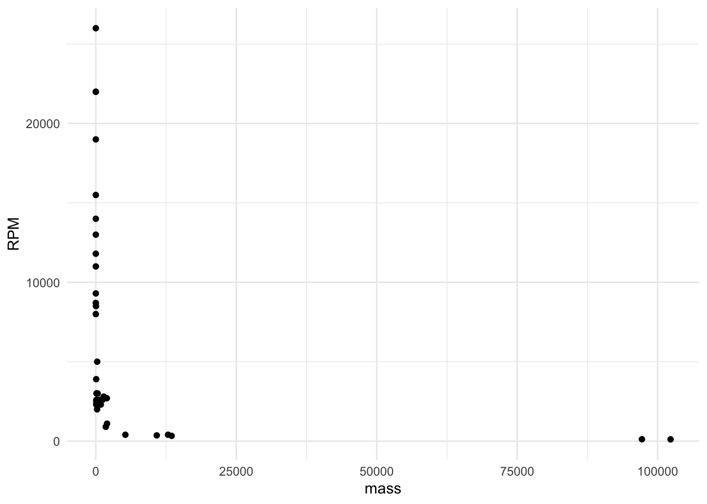
In the Figure 6, most engines have a mass of… zero. At least, that is how it appears. The scale of the horizontal axis is determined only by the two massive 100,000-pound monster engines plotted at the right end of the graph.
Plotting the magnitude of the engine mass spreads things out, as in Figure 7.
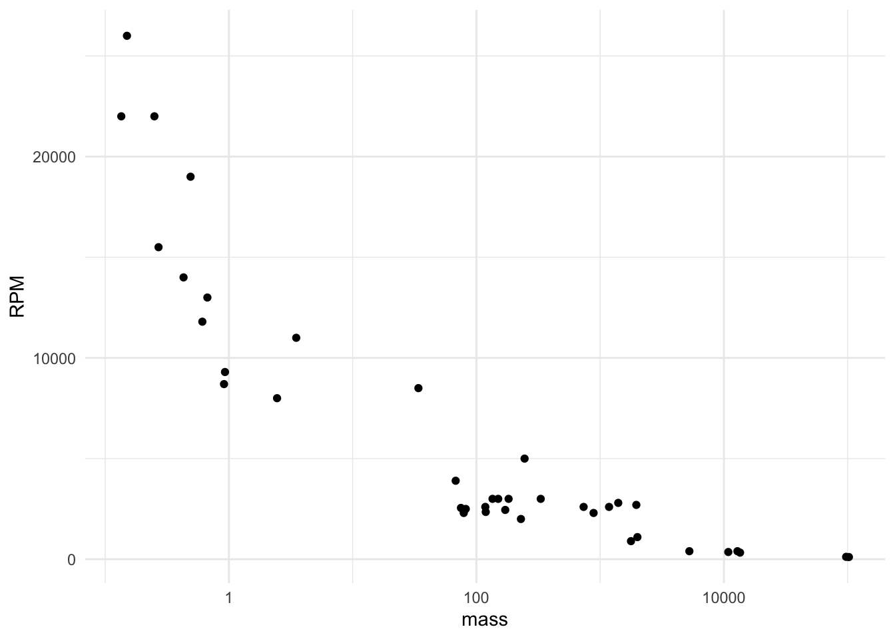
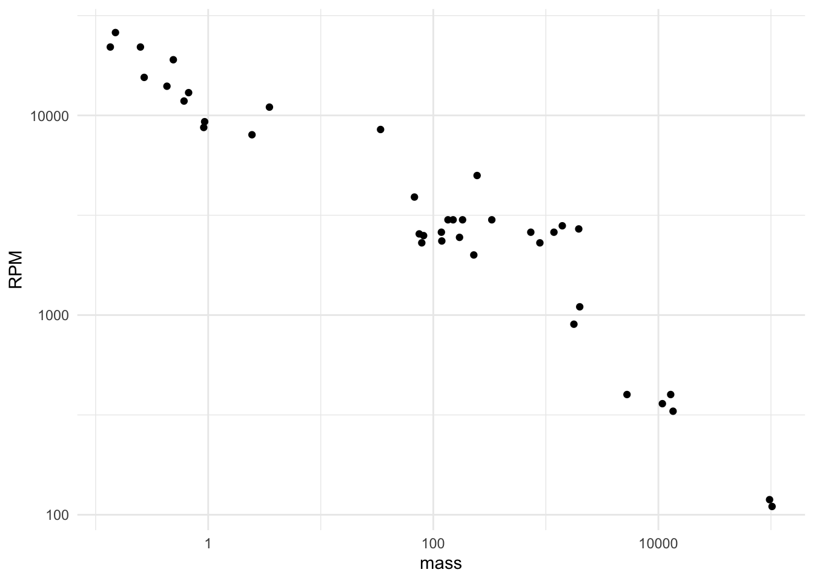
- Which of the plots in Figure 7 uses two magnitude axes?
zdb-1-8dw
- On the mass axis in the plots in Figure 7, there are labels at 1 pound, 10 pounds, and 100 pounds. The vertical grid line between 1 and 10 pounds has no label. Which of these labels would be most appropriate?
zdb-2-kfw3
- In Figure 7, there is an unlabelled vertical grid line half-way between 100 and 10,000 pounds. What is an appropriate label?
zdb-3-k4s
Figure 8 shows a coordinate system with magnitude scales for both axes. We’re interested in the physical spacing (as you would measure with an ordinary ruler) between values. Remember, the grid-line labels are in terms of the quantity itself, not the magnitude of the quantity. However the spacing between grid lines is the same for equal increments in magnitude.
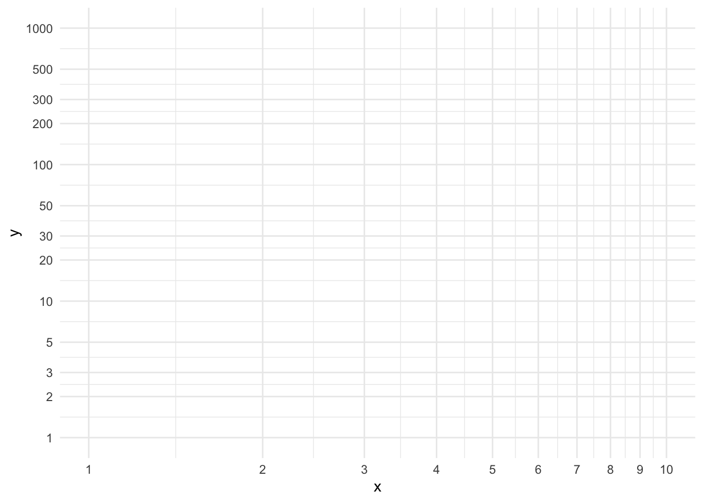
zdb-4-73sq
On the x-axis scale in Figure 8, the labels 1.0, 2.0, and 3.0 refer to equal steps in the quantity value. Are they equally spaced physically?
zdb-5-347s
On the x-axis scale in Figure 8, the values 1, 2, 4, 8 are equally spaced in magnitude. (In this case, each is twice as big as the previous.) Are they equally spaced physically?
On the y-axis (vertical) scale in Figure 8, the horizontal grid lines labeled 2 and 10 are separated in value by a multiplicative factor of 5. There are several other pairs of labels on the y-axis that are separated by a multiplicative factor of 5, for instance 1 and 5. Write down all such pairs of labels. And, for each pair, record the spatial distance between the labels. You can use a ruler to do so, but if one is out of reach, use your fingers as a ruler.
- In magnitude plots, a decade refers to an order of magnitude range, for instance, from 1 to 10. How many decades are shown in the y-axis scale of Figure 8?
zdb-7-2se
Footnotes
The article mistakenly says “four-year period.”↩︎